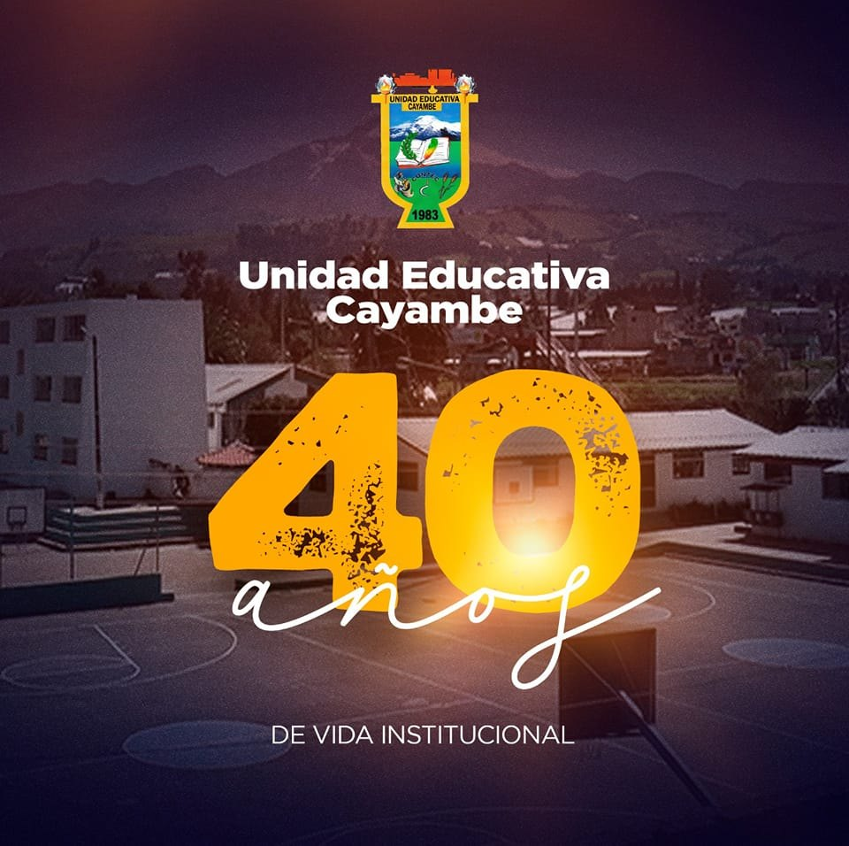

SOBRE NOSOTROS:
La Unidad Educativa “Cayambe”, se crea mediante el sustento legal con el Acuerdo Ministerial
No. 8950 del 12 de diciembre del 1983 por solicitud de la organización de Amigos
Guadalupanos de Cayambe, con la finalidad de tener un Colegio en Cayambe.

.png)
VALORES:
Respeto: Fomentar el trato amable y considerado hacia todos los miembros de la comunidad educativa.
Honestidad: Valorar la verdad y la transparencia en todas las acciones
Compromiso: Inculcar una actitud activa hacia el aprendizaje y el desarrollo personal.
Empatía: Fomentar la comprensión y el apoyo emocional hacia los demás.
PRINCIPIOS:
Educación Integral: Fomentar el desarrollo académico, emocional, social y físico de los estudiantes.
Participación Activa: Impulsar la participación de estudiantes, padres y docentes en la vida escolar.
Educación para la Vida: Preparar a los estudiantes no solo para el aula, sino también para afrontar los desafíos del mundo real.
Innovación Educativa: Adoptar nuevas metodologías y tecnologías que enriquezcan el proceso de enseñanza-aprendizaje.
OFERTA ACADEMICA:
INICIAL Y PREPARATORIA
Inicial 1
Inicial 2
Preparatoria
BASICA ELEMENTAL
Segundo Año de Básica
Tercer Año de Básica
BASICA SUPERIOR EGB
Octavo
Noveno
Decimo
BACHILLERATO
CIENCIAS
PROUCCIONES
INFORMATICA
PROGRAMACION EN SOFTWARE
BTP Elaborados Lácteos
Modalidad Intensiva
BACHILLERATO ACELERADO 1RO, 2DO Y 3RO
BÁSICA SUPERIOR INTENSIVO 8VO, 9NO Y 10MO
UBICACION:
Panamericana Sur Km 2 1/2 via Cayambe - El Quinche, Cayambe, Ecuador
CONTACTOS:
uecayambe@gmail.com
|
Misión
Formar con calidad y calidez bachilleres técnicos conscientes de
su interculturalidad y con espíritu emprendedor, basados en
conocimientos teórico prácticos, principios axiológicos y
preservación del ambiente, que les permita incursionar en
el campo laboral o continuar con sus estudios superiores
para enfrentar con éxito los retos del milenio
Visión
Constituirse en una institución líder en educación técnica,
con identidad propia, recursos humanos de excelencia
con un alto nivel de compromiso social tecnología moderna,
cumpliendo con todos los estándares de calidad. .